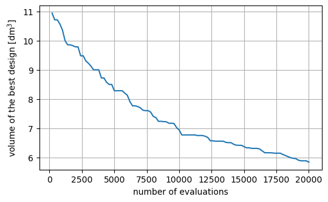
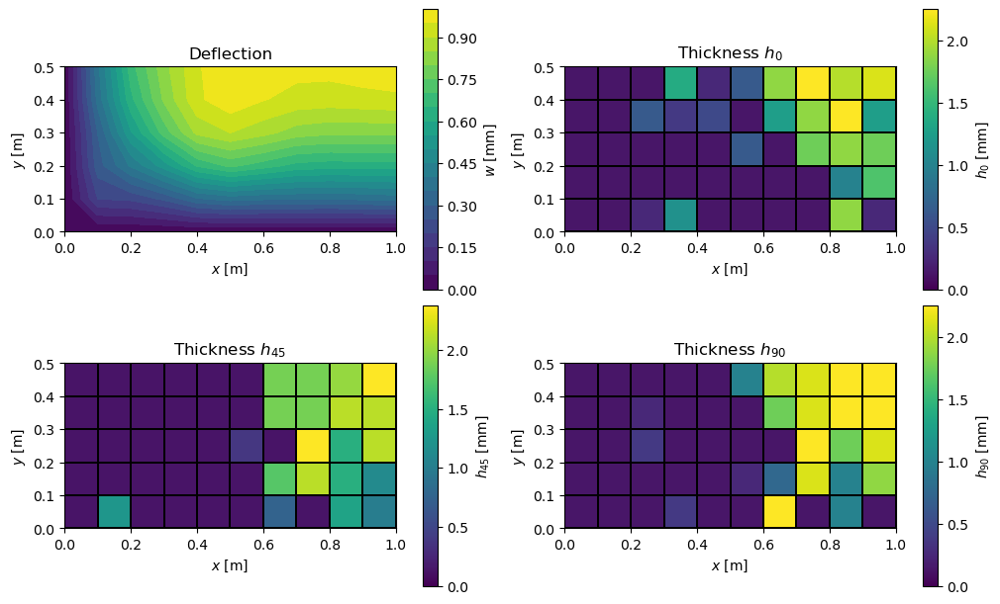

Tutorial: Ply tailoring using GA for a simply-supported plate under normal load#
Date: 4 February 2026
Author: Saullo G. P. Castro
Cite this tutorial as:
Saullo G. P. Castro. General-purpose finite element solver based on Python and Cython. Zenodo. DOI: https://doi.org/10.5281/zenodo.6573489.
Requirements#
This tutorial needs numpy, scipy, matplotlib, pymoo and pyfe3d, e.g. python -m pip install numpy scipy matplotlib pymoo pyfe3d.
Importing modules#
The thicknesses of the \(0^\circ\), \(\pm 45^\circ\) and \(90^\circ\) plies of every element of a composite plate are chosen from a list of discrete values with a genetic algorithm (GA) of pymoo to minimise the volume of the plate, under a limit on its maximum deflection.
[1]:
%matplotlib inline
import numpy as np
import matplotlib.pyplot as plt
from pymoo.core.problem import ElementwiseProblem
from pymoo.core.callback import Callback
from pymoo.algorithms.soo.nonconvex.ga import GA
from pymoo.optimize import minimize
from pymoo.operators.crossover.sbx import SBX
from pymoo.operators.mutation.pm import PM
from pymoo.operators.sampling.rnd import IntegerRandomSampling
from pymoo.operators.repair.rounding import RoundingRepair
from pymoo.termination import get_termination
from scipy.sparse.linalg import spsolve
from scipy.sparse import coo_matrix
from pyfe3d.shellprop import ShellProp
from pyfe3d import Quad4, Quad4Data, Quad4Probe, INT, DOUBLE, DOF
Ply stiffness#
Each ply is orthotropic with the in-plane reduced stiffnesses
and the transverse shear stiffnesses \(G_{13}\), \(G_{23}\). A ply at the angle \(\theta\) has the transformed stiffnesses \(\bar{Q}_{ij}(\theta)\), with \(c = \cos\theta\), \(s = \sin\theta\):
The function below returns them in a \(6 \times 6\) matrix with the Voigt ordering used by the code (\(\bar{Q}_{11}, \bar{Q}_{12}, \bar{Q}_{22}\) in the first block, the transverse shear terms at indices 3 and 4, \(\bar{Q}_{66}\) at index 5); the transverse normal row and column are zero.
[2]:
def get_Q_matrix(E1, E2, nu12, G12, G13, G23, theta_deg):
"""
Calculate the transformed reduced stiffness matrix Q_bar for a given angle.
"""
nu21 = nu12 * E2 / E1
denom = 1 - nu12 * nu21
Q11 = E1 / denom
Q22 = E2 / denom
Q12 = nu12 * E2 / denom
Q66 = G12
c = np.cos(np.radians(theta_deg))
s = np.sin(np.radians(theta_deg))
c2 = c**2; s2 = s**2; c4 = c**4; s4 = s**4
Q_bar_11 = Q11*c4 + 2*(Q12 + 2*Q66)*s2*c2 + Q22*s4
Q_bar_22 = Q11*s4 + 2*(Q12 + 2*Q66)*s2*c2 + Q22*c4
Q_bar_12 = (Q11 + Q22 - 4*Q66)*s2*c2 + Q12*(s4 + c4)
Q_bar_66 = (Q11 + Q22 - 2*Q12 - 2*Q66)*s2*c2 + Q66*(s4 + c4)
Q_bar_44 = G23 * c2 + G13 * s2
Q_bar_55 = G13 * c2 + G23 * s2
Q_bar_45 = (G13 - G23) * c * s
Q_bar = np.array([
[Q_bar_11, Q_bar_12, 0, 0, 0, 0],
[Q_bar_12, Q_bar_22, 0, 0, 0, 0],
[0, 0, 0, 0, 0, 0],
[0, 0, 0, Q_bar_44, Q_bar_45, 0],
[0, 0, 0, Q_bar_45, Q_bar_55, 0],
[0, 0, 0, 0, 0, Q_bar_66]
])
return Q_bar
Smeared laminate and plate model#
A rectangular plate \(a \times b\), simply supported on its four edges, carries a point load \(P\) normal to its mid-plane at the centre. The design variables are three integers per element that select, from a list of allowed values, the thickness \(h_0\) of the \(0^\circ\) plies, \(h_{45}\) of each of the \(+45^\circ\) and \(-45^\circ\) plies, and \(h_{90}\) of the \(90^\circ\) plies. The laminate of each element is smeared: the stacking sequence is not modelled, and the stiffnesses are
that is, \(\mathbf{D}\) is the bending stiffness of a homogeneous plate with the averaged stiffness \(\mathbf{A}/h\). The transverse shear stiffnesses \(A_{44}, A_{45}, A_{55}\) take the shear correction factor \(5/6\). These values are written directly into a ShellProp of each Quad4 element.
By symmetry only the quarter \(0 \le x \le a/2\), \(0 \le y \le b/2\) is modelled:
\(w = 0\) at the simply supported edges \(x = 0\) and \(y = 0\);
the rotation about \(y\) is zero along the symmetry line \(x = a/2\), and the rotation about \(x\) is zero along \(y = b/2\);
the in-plane displacements \(u\), \(v\) are restrained everywhere: with \(\mathbf{B} = \mathbf{0}\) the bending problem is uncoupled from the membrane one, and this also satisfies \(u = 0\) at \(x = a/2\) and \(v = 0\) at \(y = b/2\);
the centre node lies on both symmetry lines, so it carries \(P/4\).
The method _evaluate updates the element stiffness matrices for a design var, solves the static problem and returns the objective F, the volume of the full plate (four times that of the quarter), and the constraint G on the maximum deflection (next section). The class follows the pymoo ElementwiseProblem interface.
[3]:
class SmearedPlateOptimization(ElementwiseProblem):
def __init__(self, nx, ny, a, b, load_val, max_deflection, thicknesses, mat_data):
self.nx = nx
self.ny = ny
self.n_elems = (self.nx - 1)*(self.ny - 1)
self.a = a
self.b = b
self.load_val = load_val
self.max_deflection = max_deflection
self.rho = mat_data['rho']
# ply stiffness matrices for 0, 90, +45 and -45 degrees
E1, E2 = mat_data['E1'], mat_data['E2']
nu12, G12 = mat_data['nu12'], mat_data['G12']
G13, G23 = mat_data['G13'], mat_data['G23']
num_orientations = 3
self.Q0 = get_Q_matrix(E1, E2, nu12, G12, G13, G23, 0)
self.Q90 = get_Q_matrix(E1, E2, nu12, G12, G13, G23, 90)
self.Q45p = get_Q_matrix(E1, E2, nu12, G12, G13, G23, 45)
self.Q45m = get_Q_matrix(E1, E2, nu12, G12, G13, G23, -45)
self.Q45_sum = self.Q45p + self.Q45m
self.thicknesses = thicknesses
self.eid_prop = {}
n_var = num_orientations*self.n_elems
self._init_fe_model()
super().__init__(n_var=n_var,
n_obj=1,
n_ieq_constr=1,
xl=0,
xu=len(thicknesses) - 1,
vtype=int)
def _init_fe_model(self):
data = Quad4Data()
probe = Quad4Probe()
# quarter plate, 0 <= x <= a/2, 0 <= y <= b/2
xtmp = np.linspace(0, self.a/2, self.nx)
ytmp = np.linspace(0, self.b/2, self.ny)
xmesh, ymesh = np.meshgrid(xtmp, ytmp)
ncoords = np.vstack((xmesh.T.flatten(), ymesh.T.flatten(), np.zeros_like(ymesh.T.flatten()))).T
self.ncoords = ncoords
ncoords_flatten = ncoords.flatten()
self.ncoords_flatten = ncoords_flatten
nids = 1 + np.arange(ncoords.shape[0])
nid_pos = dict(zip(nids, np.arange(len(nids))))
nids_mesh = nids.reshape(self.nx, self.ny)
n1s = nids_mesh[:-1, :-1].flatten()
n2s = nids_mesh[1:, :-1].flatten()
n3s = nids_mesh[1:, 1:].flatten()
n4s = nids_mesh[:-1, 1:].flatten()
num_elements = len(n1s)
self.KC0r = np.zeros(data.KC0_SPARSE_SIZE*num_elements, dtype=INT)
self.KC0c = np.zeros(data.KC0_SPARSE_SIZE*num_elements, dtype=INT)
self.KC0v = np.zeros(data.KC0_SPARSE_SIZE*num_elements, dtype=DOUBLE)
self.N = DOF*self.nx*self.ny
self.quads = []
init_k_KC0 = 0
eid = -1
for n1, n2, n3, n4 in zip(n1s, n2s, n3s, n4s):
# placeholder property, overwritten in _evaluate
prop = ShellProp()
eid += 1
self.eid_prop[eid] = prop
quad = Quad4(probe)
quad.eid = eid
quad.n1 = n1
quad.n2 = n2
quad.n3 = n3
quad.n4 = n4
quad.c1 = DOF*nid_pos[n1]
quad.c2 = DOF*nid_pos[n2]
quad.c3 = DOF*nid_pos[n3]
quad.c4 = DOF*nid_pos[n4]
quad.init_k_KC0 = init_k_KC0
quad.update_rotation_matrix(ncoords_flatten)
quad.update_probe_xe(ncoords_flatten)
quad.update_KC0(self.KC0r, self.KC0c, self.KC0v, prop)
self.quads.append(quad)
init_k_KC0 += data.KC0_SPARSE_SIZE
def _evaluate(self, var, out, *args, **kwargs):
total_volume = 0.0
# zeroing the values of the sparse stiffness matrix before updating them
self.KC0v *= 0
for i, quad in enumerate(self.quads):
prop = self.eid_prop[quad.eid]
h0 = self.thicknesses[var[3*i]]
h45 = self.thicknesses[var[3*i + 1]]
h90 = self.thicknesses[var[3*i + 2]]
h_total = h0 + 2*h45 + h90
# smeared stiffness
A = (h0 * self.Q0) + (h90 * self.Q90) + (h45 * self.Q45_sum)
D = (h_total**2 / 12.0) * A
# membrane stiffness
prop.A11 = A[0, 0]
prop.A12 = A[0, 1]
prop.A22 = A[1, 1]
prop.A66 = A[5, 5]
# transverse shear stiffness, with the shear correction factor 5/6
prop.A44 = 5/6.*A[3, 3]
prop.A45 = 5/6.*A[3, 4]
prop.A55 = 5/6.*A[4, 4]
# bending stiffness
prop.D11 = D[0, 0]
prop.D12 = D[0, 1]
prop.D22 = D[1, 1]
prop.D66 = D[5, 5]
prop.h = h_total
quad.update_probe_xe(self.ncoords_flatten)
quad.update_KC0(self.KC0r, self.KC0c, self.KC0v, prop, update_KC0v_only=1)
total_volume += quad.area * h_total
KC0 = coo_matrix((self.KC0v, (self.KC0r, self.KC0c)), shape=(self.N, self.N)).tocsc()
bk = np.zeros(self.N, dtype=bool)
x = self.ncoords[:, 0]
y = self.ncoords[:, 1]
# in-plane displacements u and v restrained everywhere
bk[0::DOF] = True
bk[1::DOF] = True
# simply supported edges x = 0 and y = 0
at_edges = np.isclose(x, 0.) | np.isclose(y, 0.)
bk[2::DOF][at_edges] = True
# symmetry about x = a/2: rotation about y restrained
at_sym_along_x = np.isclose(x, self.a/2)
bk[4::DOF][at_sym_along_x] = True
# symmetry about y = b/2: rotation about x restrained
at_sym_along_y = np.isclose(y, self.b/2)
bk[3::DOF][at_sym_along_y] = True
bu = ~bk
# point load at the centre node, one quarter of the load of the full plate
fext = np.zeros(self.N)
fmid = self.load_val/4
check = np.isclose(x, self.a/2) & np.isclose(y, self.b/2)
fext[2::DOF][check] = fmid
KC0uu = KC0[bu, :][:, bu]
# solving the static system
uu = spsolve(KC0uu, fext[bu])
u = np.zeros(self.N)
u[bu] = uu
# deflections in the z direction and their maximum absolute value
self.result_w = u[2::DOF]
w_max = np.max(np.abs(self.result_w))
# volume of the full plate, four times that of the quarter
out["F"] = 4*total_volume
out["G"] = [w_max/self.max_deflection - 1]
Objective, constraint and history#
The optimisation problem reads
with \(V\) the volume of the plate, \(w_{\max}\) its maximum absolute deflection and \(\mathbf{k}\) the integer indices of the ply thicknesses. pymoo takes the objective F and the constraint G \(\le 0\) directly from _evaluate. The callback below stores, after each generation, the best feasible design found so far.
[4]:
class HistorySaver(Callback):
def __init__(self):
super().__init__()
self.n_evals = []
self.F = [] # objective history
self.G = [] # constraint history
self.best_X = None
self.best_F = None
self.best_G = None
def notify(self, algorithm):
# best individuals found so far
if len(algorithm.opt) > 0:
best_ind = algorithm.opt[0]
self.n_evals.append(algorithm.evaluator.n_eval)
self.F.append(best_ind.F[0])
g_val = best_ind.G[0] if best_ind.G is not None else 0.0
self.G.append(g_val)
self.best_X = best_ind.X.copy()
self.best_F = best_ind.F[0]
self.best_G = g_val
Problem data#
A \(2 \times 1\) m plate under a central load \(P = 80\) N, with the allowed deflection \(w_{\text{allow}} = 1\) mm. The quarter model has \(11 \times 6\) nodes, i.e. \(10 \times 5\) elements and three variables per element. Each variable selects one of the 20 thicknesses \(0.125, 0.250, \dots, 2.5\) mm.
[5]:
# carbon/epoxy ply properties
mat_data = {
'E1': 140e9,
'E2': 10e9,
'nu12': 0.3,
'G12': 5e9,
'G13': 5e9,
'G23': 5e9,
'rho': 1600.0
}
# allowed discrete thickness values
thicknesses = 0.125*1e-3*np.arange(1, 21)
problem = SmearedPlateOptimization(
nx=11, ny=6,
a=2.0, b=1.0,
load_val=80.0,
max_deflection=0.001,
thicknesses=thicknesses,
mat_data=mat_data
)
print('number of elements of the quarter model:', problem.n_elems)
print('number of design variables:', problem.n_var)
number of elements of the quarter model: 50
number of design variables: 150
Optimisation with a genetic algorithm#
The GA evolves a population of 200 designs over 100 generations, without gradients. The initial population is sampled at random among the integer indices. Offspring come from simulated binary crossover (SBX) and polynomial mutation (PM), both rounded back to integers. Their distribution index \(\eta\) controls the spread: a low value (e.g. 2 to 5) gives a flat, wide distribution and offspring that can be far from their parents (exploration); a high value (e.g. 20 to 30) gives a narrow distribution and offspring close to their parents (exploitation). The seed is fixed, so the run is repeatable.
[6]:
algorithm = GA(
pop_size=200,
sampling=IntegerRandomSampling(),
crossover=SBX(prob=1.0, eta=2, repair=RoundingRepair()),
mutation=PM(prob=0.1, eta=10, repair=RoundingRepair()),
eliminate_duplicates=True
)
termination = get_termination("n_gen", 100)
history = HistorySaver()
res = minimize(problem,
algorithm,
termination,
seed=7,
verbose=True,
save_history=False,
callback=history)
=================================================================================
n_gen | n_eval | cv_min | cv_avg | f_avg | f_min
=================================================================================
1 | 200 | 0.000000E+00 | 0.8200657581 | 0.0109400000 | 0.0109400000
2 | 400 | 0.000000E+00 | 0.4168906600 | 0.0108250000 | 0.0107100000
3 | 600 | 0.000000E+00 | 0.2638469083 | 0.0108858333 | 0.0107100000
4 | 800 | 0.000000E+00 | 0.1550693521 | 0.0110059375 | 0.0105650000
5 | 1000 | 0.000000E+00 | 0.0794551013 | 0.0110521622 | 0.0103600000
6 | 1200 | 0.000000E+00 | 0.0291233915 | 0.0109810274 | 0.0099950000
7 | 1400 | 0.000000E+00 | 0.0024874217 | 0.0109672517 | 0.0098550000
8 | 1600 | 0.000000E+00 | 0.000000E+00 | 0.0107543250 | 0.0098550000
9 | 1800 | 0.000000E+00 | 0.000000E+00 | 0.0105461750 | 0.0098250000
10 | 2000 | 0.000000E+00 | 0.000000E+00 | 0.0104033500 | 0.0097850000
11 | 2200 | 0.000000E+00 | 0.000000E+00 | 0.0102611750 | 0.0097850000
12 | 2400 | 0.000000E+00 | 0.000000E+00 | 0.0101258250 | 0.0094800000
13 | 2600 | 0.000000E+00 | 0.000000E+00 | 0.0100086500 | 0.0094800000
14 | 2800 | 0.000000E+00 | 0.000000E+00 | 0.0098739750 | 0.0093050000
15 | 3000 | 0.000000E+00 | 0.000000E+00 | 0.0097646500 | 0.0092250000
16 | 3200 | 0.000000E+00 | 0.000000E+00 | 0.0096716500 | 0.0091250000
17 | 3400 | 0.000000E+00 | 0.000000E+00 | 0.0095620000 | 0.0090000000
18 | 3600 | 0.000000E+00 | 0.000000E+00 | 0.0094833750 | 0.0090000000
19 | 3800 | 0.000000E+00 | 0.000000E+00 | 0.0093959000 | 0.0090000000
20 | 4000 | 0.000000E+00 | 0.000000E+00 | 0.0093143500 | 0.0087200000
21 | 4200 | 0.000000E+00 | 0.000000E+00 | 0.0092250250 | 0.0087200000
22 | 4400 | 0.000000E+00 | 0.000000E+00 | 0.0091384500 | 0.0085750000
23 | 4600 | 0.000000E+00 | 0.000000E+00 | 0.0090505250 | 0.0085000000
24 | 4800 | 0.000000E+00 | 0.000000E+00 | 0.0089643500 | 0.0085000000
25 | 5000 | 0.000000E+00 | 0.000000E+00 | 0.0088718750 | 0.0082850000
26 | 5200 | 0.000000E+00 | 0.000000E+00 | 0.0087984500 | 0.0082850000
27 | 5400 | 0.000000E+00 | 0.000000E+00 | 0.0087248500 | 0.0082850000
28 | 5600 | 0.000000E+00 | 0.000000E+00 | 0.0086507000 | 0.0082850000
29 | 5800 | 0.000000E+00 | 0.000000E+00 | 0.0085939500 | 0.0082050000
30 | 6000 | 0.000000E+00 | 0.000000E+00 | 0.0085125000 | 0.0081300000
31 | 6200 | 0.000000E+00 | 0.000000E+00 | 0.0084416500 | 0.0079150000
32 | 6400 | 0.000000E+00 | 0.000000E+00 | 0.0083575750 | 0.0077700000
33 | 6600 | 0.000000E+00 | 0.000000E+00 | 0.0082868750 | 0.0077700000
34 | 6800 | 0.000000E+00 | 0.000000E+00 | 0.0082087000 | 0.0077450000
35 | 7000 | 0.000000E+00 | 0.000000E+00 | 0.0081419250 | 0.0077050000
36 | 7200 | 0.000000E+00 | 0.000000E+00 | 0.0080577250 | 0.0076200000
37 | 7400 | 0.000000E+00 | 0.000000E+00 | 0.0079835500 | 0.0076050000
38 | 7600 | 0.000000E+00 | 0.000000E+00 | 0.0079224750 | 0.0076050000
39 | 7800 | 0.000000E+00 | 0.000000E+00 | 0.0078589250 | 0.0075550000
40 | 8000 | 0.000000E+00 | 0.000000E+00 | 0.0078051000 | 0.0074100000
41 | 8200 | 0.000000E+00 | 0.000000E+00 | 0.0077378750 | 0.0073700000
42 | 8400 | 0.000000E+00 | 0.000000E+00 | 0.0076830000 | 0.0072400000
43 | 8600 | 0.000000E+00 | 0.000000E+00 | 0.0076277750 | 0.0072400000
44 | 8800 | 0.000000E+00 | 0.000000E+00 | 0.0075732750 | 0.0072300000
45 | 9000 | 0.000000E+00 | 0.000000E+00 | 0.0075251750 | 0.0072250000
46 | 9200 | 0.000000E+00 | 0.000000E+00 | 0.0074839000 | 0.0071750000
47 | 9400 | 0.000000E+00 | 0.000000E+00 | 0.0074358750 | 0.0071750000
48 | 9600 | 0.000000E+00 | 0.000000E+00 | 0.0073929500 | 0.0071650000
49 | 9800 | 0.000000E+00 | 0.000000E+00 | 0.0073387500 | 0.0070250000
50 | 10000 | 0.000000E+00 | 0.000000E+00 | 0.0072863000 | 0.0069450000
51 | 10200 | 0.000000E+00 | 0.000000E+00 | 0.0072359250 | 0.0067750000
52 | 10400 | 0.000000E+00 | 0.000000E+00 | 0.0071912750 | 0.0067750000
53 | 10600 | 0.000000E+00 | 0.000000E+00 | 0.0071666250 | 0.0067750000
54 | 10800 | 0.000000E+00 | 0.000000E+00 | 0.0071216500 | 0.0067750000
55 | 11000 | 0.000000E+00 | 0.000000E+00 | 0.0070862250 | 0.0067750000
56 | 11200 | 0.000000E+00 | 0.000000E+00 | 0.0070511000 | 0.0067750000
57 | 11400 | 0.000000E+00 | 0.000000E+00 | 0.0070139000 | 0.0067550000
58 | 11600 | 0.000000E+00 | 0.000000E+00 | 0.0069802250 | 0.0067550000
59 | 11800 | 0.000000E+00 | 0.000000E+00 | 0.0069496250 | 0.0067550000
60 | 12000 | 0.000000E+00 | 0.000000E+00 | 0.0069202750 | 0.0067300000
61 | 12200 | 0.000000E+00 | 0.000000E+00 | 0.0068894250 | 0.0066900000
62 | 12400 | 0.000000E+00 | 0.000000E+00 | 0.0068537500 | 0.0065750000
63 | 12600 | 0.000000E+00 | 0.000000E+00 | 0.0068250000 | 0.0065750000
64 | 12800 | 0.000000E+00 | 0.000000E+00 | 0.0067942500 | 0.0065600000
65 | 13000 | 0.000000E+00 | 0.000000E+00 | 0.0067649000 | 0.0065600000
66 | 13200 | 0.000000E+00 | 0.000000E+00 | 0.0067460750 | 0.0065600000
67 | 13400 | 0.000000E+00 | 0.000000E+00 | 0.0067255250 | 0.0065600000
68 | 13600 | 0.000000E+00 | 0.000000E+00 | 0.0067037000 | 0.0065200000
69 | 13800 | 0.000000E+00 | 0.000000E+00 | 0.0066815250 | 0.0065100000
70 | 14000 | 0.000000E+00 | 0.000000E+00 | 0.0066575000 | 0.0065100000
71 | 14200 | 0.000000E+00 | 0.000000E+00 | 0.0066364250 | 0.0064550000
72 | 14400 | 0.000000E+00 | 0.000000E+00 | 0.0066123750 | 0.0064250000
73 | 14600 | 0.000000E+00 | 0.000000E+00 | 0.0065897250 | 0.0064200000
74 | 14800 | 0.000000E+00 | 0.000000E+00 | 0.0065742250 | 0.0064200000
75 | 15000 | 0.000000E+00 | 0.000000E+00 | 0.0065577000 | 0.0063750000
76 | 15200 | 0.000000E+00 | 0.000000E+00 | 0.0065398500 | 0.0063350000
77 | 15400 | 0.000000E+00 | 0.000000E+00 | 0.0065244750 | 0.0063350000
78 | 15600 | 0.000000E+00 | 0.000000E+00 | 0.0065104750 | 0.0063150000
79 | 15800 | 0.000000E+00 | 0.000000E+00 | 0.0064906250 | 0.0063150000
80 | 16000 | 0.000000E+00 | 0.000000E+00 | 0.0064752000 | 0.0063150000
81 | 16200 | 0.000000E+00 | 0.000000E+00 | 0.0064551250 | 0.0062950000
82 | 16400 | 0.000000E+00 | 0.000000E+00 | 0.0064281000 | 0.0062300000
83 | 16600 | 0.000000E+00 | 0.000000E+00 | 0.0064066000 | 0.0061650000
84 | 16800 | 0.000000E+00 | 0.000000E+00 | 0.0063877000 | 0.0061650000
85 | 17000 | 0.000000E+00 | 0.000000E+00 | 0.0063723500 | 0.0061650000
86 | 17200 | 0.000000E+00 | 0.000000E+00 | 0.0063544000 | 0.0061600000
87 | 17400 | 0.000000E+00 | 0.000000E+00 | 0.0063311750 | 0.0061500000
88 | 17600 | 0.000000E+00 | 0.000000E+00 | 0.0063089250 | 0.0061500000
89 | 17800 | 0.000000E+00 | 0.000000E+00 | 0.0062872000 | 0.0061500000
90 | 18000 | 0.000000E+00 | 0.000000E+00 | 0.0062584250 | 0.0061050000
91 | 18200 | 0.000000E+00 | 0.000000E+00 | 0.0062345750 | 0.0060700000
92 | 18400 | 0.000000E+00 | 0.000000E+00 | 0.0062093250 | 0.0060300000
93 | 18600 | 0.000000E+00 | 0.000000E+00 | 0.0061852500 | 0.0059950000
94 | 18800 | 0.000000E+00 | 0.000000E+00 | 0.0061625500 | 0.0059750000
95 | 19000 | 0.000000E+00 | 0.000000E+00 | 0.0061381500 | 0.0059650000
96 | 19200 | 0.000000E+00 | 0.000000E+00 | 0.0061167000 | 0.0059100000
97 | 19400 | 0.000000E+00 | 0.000000E+00 | 0.0060898000 | 0.0058900000
98 | 19600 | 0.000000E+00 | 0.000000E+00 | 0.0060715500 | 0.0058900000
99 | 19800 | 0.000000E+00 | 0.000000E+00 | 0.0060508500 | 0.0058900000
100 | 20000 | 0.000000E+00 | 0.000000E+00 | 0.0060298250 | 0.0058450000
Results#
The best design is analysed once more to print its volume and maximum deflection, and the mean thickness of each ply orientation over the elements. The convergence plot shows the volume of the best feasible design against the number of evaluations.
[7]:
out_final = {}
problem._evaluate(history.best_X, out_final)
w_max = np.max(np.abs(problem.result_w))
h0_vals = thicknesses[history.best_X[0::3]]
h45_vals = thicknesses[history.best_X[1::3]]
h90_vals = thicknesses[history.best_X[2::3]]
print(f"evaluations: {history.n_evals[-1]}")
print(f"volume of the best plate: {out_final['F']:.4e} m^3")
print(f"maximum deflection: {w_max*1e3:.4f} mm (allowed {problem.max_deflection*1e3:.1f} mm)")
print(f"constraint value g: {out_final['G'][0]:.4e}")
print(f"mean thicknesses [mm]: h0 = {h0_vals.mean()*1e3:.4f}, h45 = {h45_vals.mean()*1e3:.4f}, "
f"h90 = {h90_vals.mean()*1e3:.4f}")
plt.figure(figsize=(6, 3.5))
plt.plot(history.n_evals, np.array(history.F)*1e3)
plt.xlabel('number of evaluations')
plt.ylabel('volume of the best design [dm$^3$]')
plt.grid(True)
plt.show()
evaluations: 20000
volume of the best plate: 5.8450e-03 m^3
maximum deflection: 0.9967 mm (allowed 1.0 mm)
constraint value g: -3.3454e-03
mean thicknesses [mm]: h0 = 0.6800, h45 = 0.7425, h90 = 0.7575

Optimised design#
The figure shows, on the modelled quarter of the plate (\(x\) from the simply supported edge to the centre line at \(a/2\)), the deflection \(w\) of the optimised design and the thicknesses \(h_0\), \(h_{45}\) and \(h_{90}\) of each element.
[8]:
def plot_design(problem, h0_vals, h45_vals, h90_vals):
nx, ny = problem.nx, problem.ny
xg = problem.ncoords[:, 0].reshape(nx, ny)
yg = problem.ncoords[:, 1].reshape(nx, ny)
w = problem.result_w.reshape(nx, ny)
fig, axes = plt.subplots(2, 2, figsize=(10, 6), constrained_layout=True)
ax = axes[0, 0]
cs = ax.contourf(xg, yg, w*1e3, levels=20, cmap='viridis')
fig.colorbar(cs, ax=ax, label='$w$ [mm]')
ax.set_title('Deflection')
for ax, vals, name in zip([axes[0, 1], axes[1, 0], axes[1, 1]],
[h0_vals, h45_vals, h90_vals],
['$h_0$', '$h_{45}$', '$h_{90}$']):
# element i has the indices (ix, iy) with i = ix*(ny - 1) + iy
vals_grid = np.asarray(vals).reshape(nx - 1, ny - 1)
pc = ax.pcolormesh(xg, yg, vals_grid*1e3, cmap='viridis', edgecolors='k',
linewidth=0.3, vmin=0, vmax=np.max(vals_grid*1e3))
fig.colorbar(pc, ax=ax, label=name + ' [mm]')
ax.set_title('Thickness ' + name)
for ax in axes.flatten():
ax.set_aspect('equal')
ax.set_xlabel('$x$ [m]')
ax.set_ylabel('$y$ [m]')
plt.show()
plot_design(problem, h0_vals, h45_vals, h90_vals)
